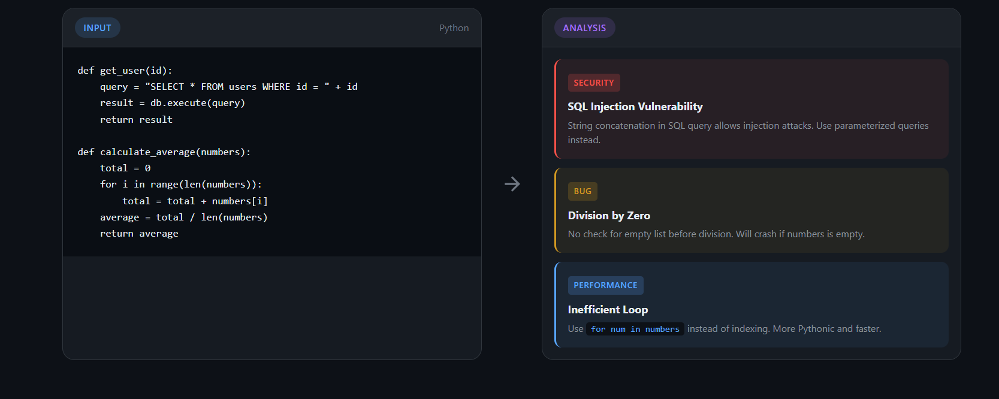

FlakkAi's professional dark-themed interface with code editor and analysis panel
The Problem
Code review is essential for maintaining quality, but it's often inconsistent and time-consuming. Students learning to code frequently make the same mistakes without understanding why their code is problematic. Traditional linters catch syntax errors but miss logic bugs, security vulnerabilities, and performance anti-patterns.
I wanted to build a tool that goes beyond simple syntax checking - one that analyzes code like an experienced developer would, explaining not just what's wrong, but why it matters and how to fix it.
The Solution
FlakkAi combines the power of Claude AI with a clean, professional web interface to deliver comprehensive code analysis across five key dimensions.
Technical Architecture
The application follows a clean client-server architecture with the Flask backend handling API communication and the frontend providing a responsive, real-time experience.
# Flask endpoint handling code analysis @app.route('/review', methods=['POST']) def review_code(): data = request.get_json() code = data.get('code') language = data.get('language') # Send to Claude with analysis prompt response = client.messages.create( model="claude-haiku-4-5-20251001", max_tokens=2048, messages=[{"role": "user", "content": prompt}] ) return jsonify({'review': response.content})
Key Technical Decisions
- Flask: Lightweight Python framework perfect for API-focused applications
- Claude Haiku: Fast, capable model optimized for code review tasks
- Marked.js: Renders Claude's markdown responses with full formatting
- Highlight.js: Syntax highlighting for code blocks in responses
- CSS Variables: Dark theme with consistent design tokens
UI/UX Design
The interface was designed with developers in mind - a professional dark theme that's easy on the eyes during long coding sessions, with clear visual hierarchy and intuitive interactions.
Main Interface
Two-panel layout with code editor on the left and analysis results on the right.

About & Examples
Educational section showcasing features and example analysis output.
Design Features
- Multi-File Upload: Drag & drop or browse to upload multiple files at once
- File Tabs: Switch between uploaded files with visual indicators for analyzed files
- Analysis History: Save and revisit past analyses stored in browser localStorage
- Responsive Layout: Works on desktop, tablet, and mobile devices
- Real-time Feedback: Loading animations and character counter
- Keyboard Shortcuts: Ctrl+Enter to submit code quickly
- Syntax Highlighting: Both in editor and analysis results
- 13+ Languages: Python, JavaScript, TypeScript, Java, C++, and more
Advanced Features
Beyond basic code analysis, FlakkAi includes powerful workflow features that make it practical for real development scenarios.
// File handling with automatic language detection const extensionToLanguage = { 'py': 'python', 'js': 'javascript', 'ts': 'typescript', 'java': 'java', 'cpp': 'cpp', // ... 20+ more extensions }; // History stored in localStorage function saveToHistory(result) { const history = JSON.parse(localStorage.getItem('flakkai_history')); history.unshift({ id: Date.now(), ...result }); localStorage.setItem('flakkai_history', JSON.stringify(history)); }
The Analysis Approach
What sets FlakkAi apart is its educational approach. Instead of just flagging issues, it explains each problem using a three-part structure that helps developers learn and improve.
For Each Issue Found:
- WHAT: Clear description of the problem identified
- WHY: Educational explanation of why this matters
- HOW: Concrete code example showing the fix
# Example: FlakkAi analyzing vulnerable code # User's Code: query = "SELECT * FROM users WHERE id = " + user_id # FlakkAi Output: # WHAT: SQL Injection Vulnerability # WHY: String concatenation allows attackers to inject # malicious SQL commands, potentially exposing or # destroying your entire database. # HOW: Use parameterized queries instead: query = "SELECT * FROM users WHERE id = %s" cursor.execute(query, (user_id,))
Who It's For
FlakkAi was built with multiple user groups in mind, each benefiting from the tool in different ways.
Phase 2 — Roadmap
Self-Hosted AI Platform
Planned next phase: expanding FlakkAi into a fully self-hosted AI platform with local model support via Ollama — zero API costs, full privacy, offline capable.
From API to Self-Hosted
The current version of FlakkAi uses the Claude API for AI capabilities — powerful, cloud-based, and immediately deployable. The planned Phase 2 introduces a self-hosted alternative using Ollama to run open-source large language models entirely on local hardware.
This planned evolution demonstrates a deeper understanding of AI infrastructure — not just consuming APIs, but deploying and managing models, designing modular architectures, and building systems that work independently of third-party services.
Why Self-Hosted?
- Full Ownership: No API keys, no rate limits, no recurring costs
- Privacy: Code and conversations never leave your machine
- Offline Capable: Works without an internet connection
- Customizable: Swap models, fine-tune behavior, control everything
- Portfolio Value: Demonstrates real AI engineering, not just API calls
Platform Architecture
The FlakkAi Platform follows a modular architecture where the core Flask backend routes requests to specialized modules, each powered by local LLMs through Ollama.
# Modular Flask backend with Ollama integration from modules.chat import chat, stream_chat, get_available_models from modules.code import analyze_code @app.route('/api/chat', methods=['POST']) def api_chat(): result = chat(messages, model="mistral", persona="default") return jsonify({'response': result['response']}) @app.route('/api/code/review', methods=['POST']) def api_code_review(): result = analyze_code(code, language, model="mistral") return jsonify({'review': result['review']})
Modules: Chat & Code
The platform is organized into specialized modules that can be extended independently. Each module connects to the same Ollama backend but serves a different purpose.
Chat Features
- Conversation Sidebar: Browse, create, and delete chat sessions
- AI Personas: Switch between Default, Creative, and Technical modes
- Prompt Suggestions: Quick-start buttons on the welcome screen
- Typing Indicators: Animated dots while the model generates a response
- Markdown Rendering: Full formatting with code blocks and syntax highlighting
- Model Selector: Switch between installed Ollama models from the navbar
Local AI Infrastructure
Setting up a self-hosted AI stack involves installing the Ollama runtime, pulling model weights, and configuring the application to communicate with the local inference server.
Successfully installed Ollama v0.15.4
$ ollama pull mistral
pulling manifest...
pulling f5074b1221da... 100% ▕██████████████████▏ 4.4 GB
success
$ ollama list
NAME SIZE MODIFIED
mistral 4.4 GB just now
$ cd FlakkAi-Platform && python app.py
* Running on http://127.0.0.1:5002
* Ollama connected - 1 model available
Infrastructure Details
- Ollama: Open-source runtime for deploying LLMs locally
- Mistral 7B: 7 billion parameter model, 4.4 GB on disk, runs on consumer hardware
- REST API: Ollama exposes localhost:11434 - the Flask backend communicates via HTTP
- Model Management: Pull, list, and swap models via Ollama CLI
- Health Monitoring: Real-time connection status shown in the navbar
- Hybrid Engine: Toggle between local Ollama and cloud Claude API per request
# Chat module communicating with local Ollama import requests OLLAMA_URL = "http://localhost:11434" def chat(messages, model="mistral", persona="default"): response = requests.post( f"{OLLAMA_URL}/api/chat", json={ "model": model, "messages": [ {"role": "system", "content": SYSTEM_PROMPTS[persona]}, *messages ], "stream": False } ) return response.json()["message"]["content"] def get_available_models(): """Fetch all locally installed models.""" response = requests.get(f"{OLLAMA_URL}/api/tags") return [m["name"] for m in response.json()["models"]]
Technical Stack
Backend
- Python 3.13: Core programming language
- Flask 3.0: Lightweight web framework
- Anthropic SDK: Official Claude API client
- python-dotenv: Environment variable management
Frontend
- Vanilla JavaScript: No framework overhead
- Marked.js: Markdown parsing and rendering
- Highlight.js: Code syntax highlighting
- CSS Custom Properties: Themeable design system
AI Integration
- Claude Haiku: Anthropic's fast, capable model for code analysis
- Anthropic SDK: Official Python client for Claude API
- Structured Prompts: Snippet vs. full-program detection, consistent WHAT/WHY/HOW format
- 13+ Languages: Python, JavaScript, TypeScript, Java, C++, Go, and more
- Deployed on Render: Live cloud deployment with gunicorn
Future Enhancements
FlakkAi is a living project with plans for continued improvement and expansion.
Planned Features
- Model Fine-Tuning: Train custom models on specific codebases and domains
- RAG Integration: Feed custom documents and knowledge bases into conversations
- Additional Modules: FlakkData (data analysis), FlakkDocs (documentation generation)
- IDE Extensions: VS Code and JetBrains plugins
- Export Reports: Download analysis results as PDF or Markdown
- GitHub Integration: Analyze code directly from repositories
- Multi-Model Comparison: Run same prompt across models and compare outputs